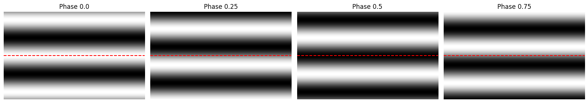

Visual Stimuli#
Dot motion#
The dot motion stimulus consists of {how many} dots of {what size?} that move across the monitor. Key parameters include direction (in degrees), speed (in deg/s), and coherence (in percent). The coherence determines what percent the dots move in the specified direction. The remaining dots move in any direction.
Drifting Gratings (full field)#
The drifting gratings stimulus consists of a full field sinusoidal grating that is presented on the monitor that moves orthogonal to the orientation of the grating. Key parameters include orientation and direction (in degrees), temporal frequency (in cycles/sec or Hz), spatial frequency (in cyces/deg), and contrast (in percent). In our typical use cases, drifting gratings are presented for 2 seconds with 1 second of mean luminance gray in between trials. There are blanksweeps interleaved among the grating trials, where the 2 second grating is replaced by mean luminance gray. (Note: in many use cases the direction is referred to as orientation in the stimulus table despite these being different, but closely related, concepts).
Drifting Gratings windowed#
The standard drifting gratings stimulus is a full field grating that fills the entire monitor (spanning ~120°x90°). The Drifting Gratings windowed stimulus is the same sinusoidal grating, but now in a restricted window. The window is sized 30° diameter, and the position of the window was determined to align with the population receptive field. Thus in addition to the grating parameters listed above, the window size and position (x,y) are also important (though stable throughout the experiment). In some instances, the window has a hard edge while in others there is a contrast gradient creating a soft edge.
Flashes#
The flash stimulus are alternating full field black and white flashes. Each flash is presented for 0.25 seconds. The full range of contrast is typically 80% contrast.
Gabor patches#
The gabor patches stimulus consists of sinuisoidal gratings that are spatially restricted. Key parameters include orientation and direction (in degrees), temporal frequency (in Hz), spatial frequency (in cycles/deg), contrast (in percent), patch size (in degrees), and patch location (in degreees). Each trial is presented for 0.25 seconds TODO: are there blanksweeps? intersweeps?
Locally Sparse Noise#
The locally sparse noise stimulus consists of black and white spots flashed on the monitor. For each frame of the stimulus a small number of pixels were white and a small number were black, while the rest were mean luminance gray. The white and black spots were distributed such that no two spots were within 5 pixels of each other. Each time a given pixel was occupied by a black (or white) spot, there was a different array of other pixels occupied by either black or white spots. As a result, when all of the frames when that pixel was occupied by the black spot were averaged together, there was no significant structure surrounding the specified pixel. Further, the stimulus was well balanced with regards to the contrast of the pixels, such that while there was a slightly higher probability of a pixel being occupied just outside of the 5-pixel exclusion zone, the probability was equal for pixels of both contrast. Each pixel was occupied by either a white or black spot a variable number of times. Typically, each frame we presented for 0.25 seconds and followed immediately by the next trial without any intertrial interval. There are no blanksweeps. Pixels were either 4.6° on a side or 9.3° on a side
Natural Movies#
Natural movies are black and white movie clips presented on the monitor. These movies have natural spatial and temporal statistics.
In many datasets, we use the opening scene of Touch of Evil, an Orson Welles film, for our natural movie stimulus. This was selected because it is a continuous shot with no camera cuts and with a variety of different motion signals.
Natural Scenes#
The natural scenes stimulus consists of black and white images that are flashed on the monitor. These images have natural spatial statistics. Typically, each trial is presented for 0.25 seconds and followed immediately by the next trial without any intertrial interval. There are blanksweeps, where the images are replaced by the mean luminance gray, interleaved in among the trials. The Visual Coding datasets use a set of 118 images selected from three different image sets: the Berkeley Segmentation Dataset [Martin et al., 2001], van Hateren Natural Image Dataset [van Hateren and van der Schaaf, 1998], and McGill Calibrated Colour Image Database [Olmos and Kingdom, 2004].
Static Gratings#
The static gratings stimulus consists of a stationary full field sinusoidal grating that is flasshed on the monitor. As the gratings do not move, there is no temporal frequency parameter. The key parameters are orientation (in degrees), spatial frequency (in cycles/deg), contrast (in percent), and phase (as a fraction). In our typical use cases, each trial is presented for 0.25 seconds and followed immediately by the next trial without any intertrial interval. There are blanksweeps, where the grating is replaced by the mean luminance gray, interleaved among the trials.
What is the phase of the grating?
The phase refers to the relative position of the grating. Phase 0 and Phase 0.5 are 180° apart so that the peak of the grating of phase 0 lines up with the trough of phase 0.5.

Spontaneous Activity#
Most sessions include an epoch of spontaneous activity. During this epoch the monitor is held at mean luminance gray and there is no patterned stimulus presented. This provides a valuable time that can be used as a baseline comparison for visually evoked activity.